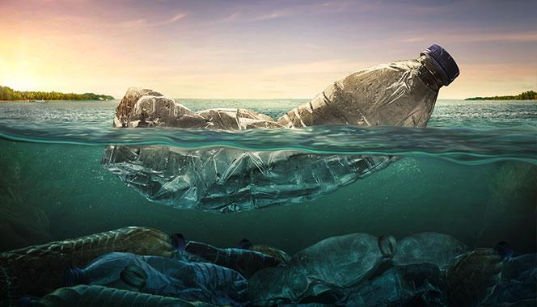

Water pollution is a serious environmental issue that affects many parts of the world. It occurs when harmful substances, such as chemicals, pesticides, and sewage, are released into bodies of water, including lakes, rivers, and oceans. This can have devastating effects on aquatic life and can also affect human health. Water pollution can have many sources, including industrial waste, agricultural runoff, and sewage treatment plants. In addition, non-point source pollution, which occurs when pollutants from a variety of sources, such as runoff from roads and parking lots, enter waterways, can also contribute to water pollution. The impacts of water pollution are widespread and can be severe. It can cause the death of fish and other aquatic life, as well as harm to birds and animals that depend on these creatures for food. In addition, polluted water can pose a threat to human health, causing illness and even death in some cases. To address the problem of water pollution, it is important to reduce the amount of pollutants that are released into bodies of water. This can be done through a combination of regulatory measures, such as enforcing pollution standards and limiting the use of harmful chemicals, as well as individual actions, such as properly disposing of household chemicals and reducing water usage. By taking action to address water pollution, we can help protect the health of our environment and the health of those who depend on it
Water pollution is caused by various human activities such as industrial discharge, sewage disposal, oil spills, agricultural runoff, and littering. These activities result in the release of harmful substances such as chemicals, pesticides, heavy metals, and organic matter into water bodies, causing water pollution.The effects of water pollution are wide-ranging and can have severe consequences for both human health and the environment. Water pollution can cause waterborne diseases such as cholera, typhoid, and dysentery, as well as other health problems such as skin irritation and reproductive issues. It can also lead to the destruction of aquatic ecosystems and the loss of biodiversity. Fish and other aquatic animals may be killed or forced to migrate due to the pollution, leading to a decline in fish stocks and negatively impacting the livelihoods of people who depend on fishing. Water pollution can also have economic consequences, as polluted water cannot be used for agriculture, industrial processes, or other purposes. This can lead to reduced crop yields, decreased industrial production, and a decline in tourism. In addition, cleaning up polluted water can be expensive, and the costs are often passed on to taxpayers. Overall, water pollution is a serious issue that requires immediate attention and action. Steps must be taken to reduce pollution from human activities and protect our water resources for future generations.
Objective of preventing and controlling water pollution in rivers. Under this scheme, various pollution control measures are implemented, including the interception and diversion of untreated sewage, the setting up of sewage treatment plants, and the development of riverfronts with public participation.
This scheme aims to restore and conserve the ecological health of lakes, prevent pollution, and improve water quality. Under this scheme, various measures are taken, including the treatment of sewage, the removal of solid waste, the control of industrial pollution, and the promotion of eco-friendly tourism.
aim of cleaning and rejuvenating the Ganges river, which is considered holy by millions of Indians. The programme includes a range of measures such as constructing sewage treatment plants, creating public awareness campaigns, and promoting eco-friendly cremation practices.